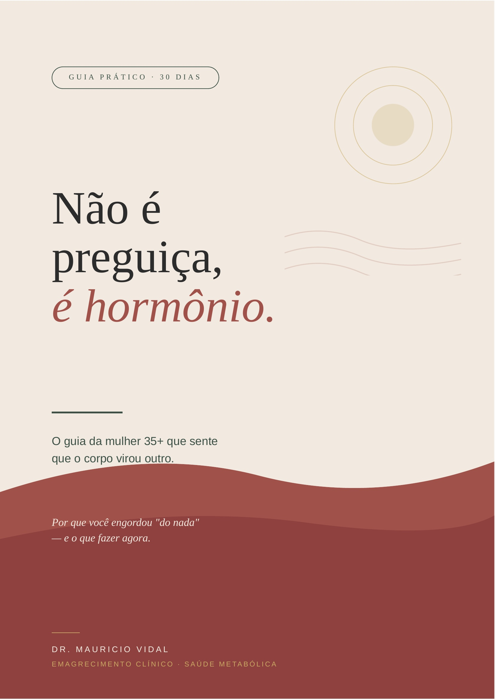

O guia da mulher 35+ que sente que o corpo virou outro. Por que você engordou "do nada" — e o que fazer agora.

Não é um livro pra todo mundo. É um guia clínico denso, direto e desenhado especificamente para a mulher 35+ que sente que o corpo virou outro. Antes de comprar, leia abaixo se faz sentido para o seu momento.
Estrutura pensada para te levar do diagnóstico ao plano prático, sem rodeios e sem dicas vazias. Linguagem direta, escrita por médico para mulheres reais — com filhos, trabalho, cansaço e energia limitada.
Esse e-book tem três promessas — e nenhuma delas é "perca 10 kg em 30 dias". A maioria das mulheres que chega ao consultório aos 40 passou os últimos 5 a 10 anos brigando sozinha com o próprio corpo. Esse não é o seu caminho.
Promessa 1. Você vai entender, em linguagem clara, o que mudou no seu corpo depois dos 35. Sem jargão médico. Sem mistério.
Promessa 2. Você vai sair com um plano prático de 30 dias — alimentação, movimento e sono — desenhado para a mulher real, com filhos, trabalho e cansaço. Não para a influencer que treina 2h por dia.
Promessa 3. Você vai saber identificar quando o problema é maior do que um e-book resolve, e o que pedir ao seu médico se for o caso.
Você tem 7 dias após a compra para revisar o conteúdo. Se sentir que o material não atende ao prometido, basta solicitar o reembolso — devolvemos integralmente, sem perguntas.
O conteúdo foi escrito especificamente para a mulher 35+ em transição hormonal — perimenopausa, pré-menopausa e menopausa. Mulheres mais jovens com sinais de resistência insulínica, SOP ou desequilíbrio hormonal também podem se beneficiar, mas a estrutura toda do livro foi pensada para a fase 35+.
Se você não tem nenhum dos 7 sinais do Capítulo 2, esse provavelmente não é o livro certo para o seu momento.
Não — e nunca foi essa a intenção. Há um capítulo inteiro (o Capítulo 7 — "Quando o e-book não basta") dedicado a te ajudar a identificar quando você precisa de avaliação médica antes de seguir sozinha. Inclui o painel completo de exames a pedir e como escolher um médico que te leve a sério.
Pense no e-book como o livro-base. A consulta aplica esses princípios ao seu caso específico. Os dois se complementam — não se substituem.
Imediatamente após a confirmação do pagamento. Você recebe o link de download por e-mail em poucos minutos. Se não chegar na caixa de entrada em até 10 minutos, verifique a caixa de spam ou nos chame no WhatsApp.
Aceitamos Pix (à vista) e cartão de crédito (com parcelamento em até 12 vezes). O processamento é seguro, feito pela plataforma Kiwify.
Sim — esse foi o critério central do livro. Tudo nele foi pensado para a mulher real, com filhos, trabalho e energia limitada, e não para quem tem 2 horas livres por dia para academia.
O capítulo de movimento, por exemplo, traz um esquema mínimo eficaz de 15 minutos, 3 vezes por semana, para semanas em que nem 30 minutos cabem. A regra dos 80/20 (acertar 80% das refeições, deixar 20% para a vida real) está em todos os capítulos.
Não. O livro defende explicitamente o oposto: glicemia estável (não restrição), proteína suficiente (não calorias contadas), comer carboidrato sempre acompanhado de proteína ou gordura. Sem cortar grupos alimentares, sem fome, sem virar nutricionista.
Se você procura dieta restritiva ou jejum prolongado, esse não é o livro.
Sim. O Capítulo 7 inclui uma seção informativa sobre os tratamentos médicos disponíveis para a transição hormonal: Terapia de Reposição Hormonal (TRH), análogos de GLP-1 (semaglutida, tirzepatida), metformina e suplementação direcionada.
É linguagem informativa para que você entenda do que se trata e possa discutir com seu médico — nunca prescrição. A decisão é sempre clínica e individual.
Você tem 7 dias após a compra para solicitar reembolso integral, conforme o Código de Defesa do Consumidor. Basta nos enviar uma mensagem dentro desse prazo e devolvemos 100% do valor — sem perguntas.
Sim. O arquivo é em formato PDF, lido em qualquer dispositivo: celular, tablet, computador, Kindle. A diagramação foi pensada para boa leitura em tela pequena também.
Você não está louca. Não é só você. O que acontece com seu corpo depois dos 35 tem nome, tem motivo e tem solução. As próximas páginas vão te explicar — e te entregar um plano prático de 30 dias pensado para a mulher real, sem julgamento e sem fórmula milagrosa.